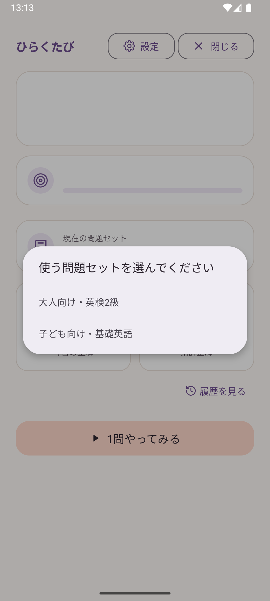
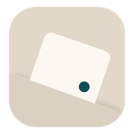
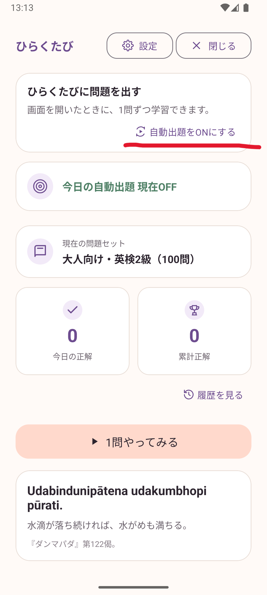
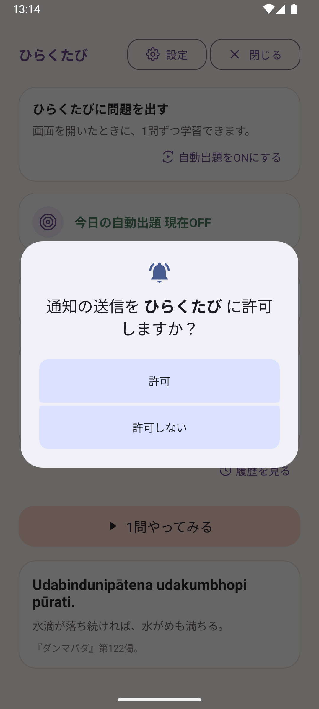
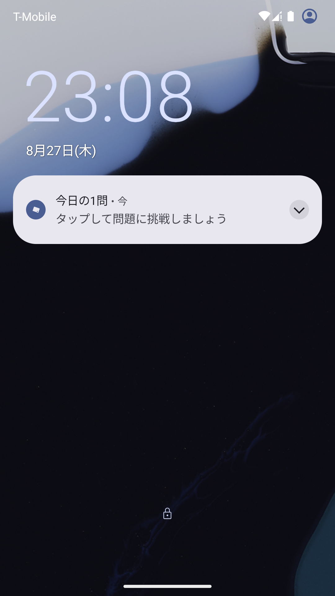

STEP 1
使う問題セットを選ぶ
初回起動時に、まず使う問題セットを選びます。
迷ったら、興味のあるものを選べば大丈夫です。問題セットはあとからいつでも変更できます。


日常のタイミングで少しずつ学べるAndroid学習アプリです。
「ひらくたび」は、最初に少しだけ設定すれば、あとは普段どおりスマホを使うだけです。
STEP 1
初回起動時に、まず使う問題セットを選びます。
迷ったら、興味のあるものを選べば大丈夫です。問題セットはあとからいつでも変更できます。

STEP 2
ホーム画面の「自動出題をONにする」をタップします。
これで、スマホを使う日常の中に問題が届くようになります。

STEP 3
Androidから通知の許可を求められたら、「許可」を選びます。
自動出題のお知らせに使用します。

STEP 4
画面を開いたタイミングなどに「今日の1問」が届きます。通知をタップして、その場で一問だけ挑戦できます。
忙しいときはスキップして構いません。

使い方に合わせて、出題方法や学習ペースを調整できます。